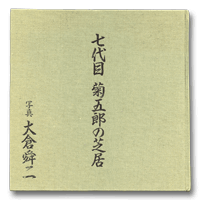

音羽屋をより深く知るための本
音羽屋をより深く知るための本 > 『梅と菊』
大倉舜二『七代目菊五郎の芝居』
（平凡社 1989年）ただ、ひたすら七代目の舞台を追った豪華写真集
写真家、大倉舜二の撮影による、当代菊五郎の豪華写真集です。菊五郎劇団四十周年の年に当たる平成元年（1989）に出版された、この写真集は舞台写真のみにより構成されています。1983年から88年までの約4年半の歳月をかけて撮影された写真の総数は199枚、56作品、66役にもおよび、作品ごとに渡辺保による解説が付されています。4年半というのは、撮る写真家にとっても、撮られる俳優にとっても、決して短い年月ではないでしょうが、写真を見ると、歌舞伎俳優というのは限られた期間にずいぶんたくさんの役を演じるものなのだと改めて驚かされます。
この写真集の特徴一つは、素顔を写したスナップの類いをいっさい含まず、「ひたすら舞台を追ったところにあるでしょう。撮影の期間に初役で演じた写真は、再演、三演の舞台を観た観客に興味深く写るでしょう。また、その後演じていない新作歌舞伎の写真なども含まれており、初演されてまま忘れ去られてしまった舞台をしのぶこともできます。この間の菊五郎の歩みをまるごと追体験できるのが、この写真集の魅力です。
菊五郎自身は、演じた者としての立場から「膨大な数の写真」を前に「疲れ」と「空恐ろしさ」を感じたと述べていますが、1984年2月の丑之助（現菊之助）の初舞台『絵本牛若丸』、1985年10月の『伽羅先代萩』政岡の初演、1986年6月の『義経千本桜』いがみの権太の初演など、菊五郎自身にとっても節目となる役々や、『変化道成寺』や『玉藻前雲居晴衣』の玉藻の前など、菊五郎がそれ以来演じていない新作の写真を見るのはうれしいものです。
当然のことながら、菊五郎が得意とする役々の写真もたくさん収められています。『青砥稿花紅彩画』の弁天小僧、『天衣紛上野初花』の片岡直次郎、『鏡獅子』の弥生と獅子の精などは、現在の観客にもなじみ深いと役です。『勧進帳』の富樫と義経、『助六』の揚巻と白酒売、『與話情浮名横櫛』のお富と与三郎、『仮名手本忠臣蔵』の判官、勘平、おかるの写真を見ることができます。いずれも度々演じている本役であり、菊五郎の「兼ル」魅力が存分に発揮されています。
また、一演目中の複数の役に扮した菊五郎が、写真によって記録に残されているのも、本写真集の魅力として挙げておきたいところです。
Copyright © Otowaya All Rights Reserved.